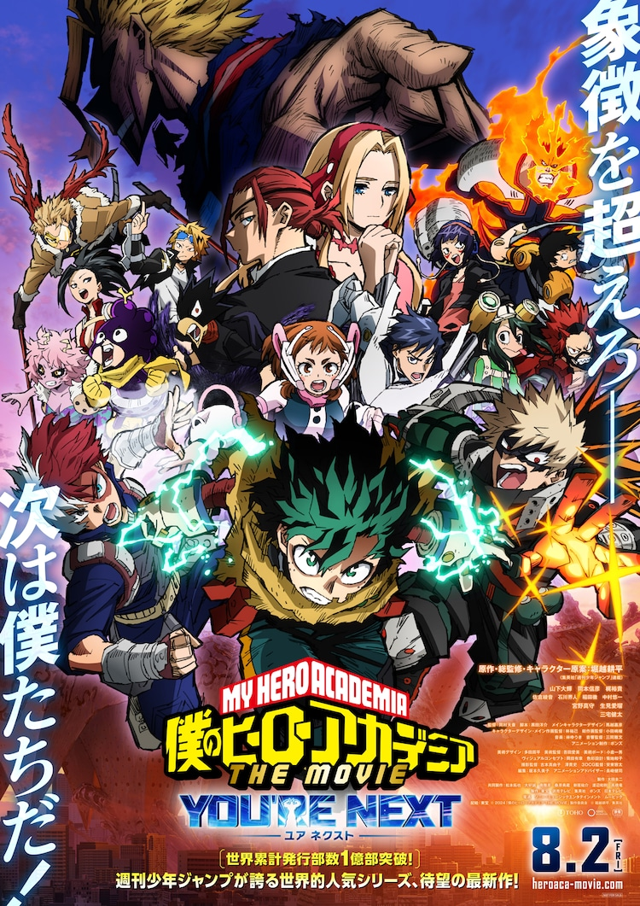
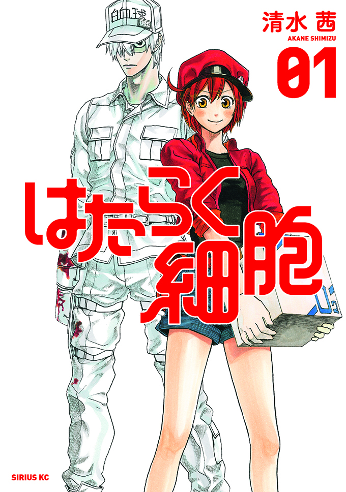
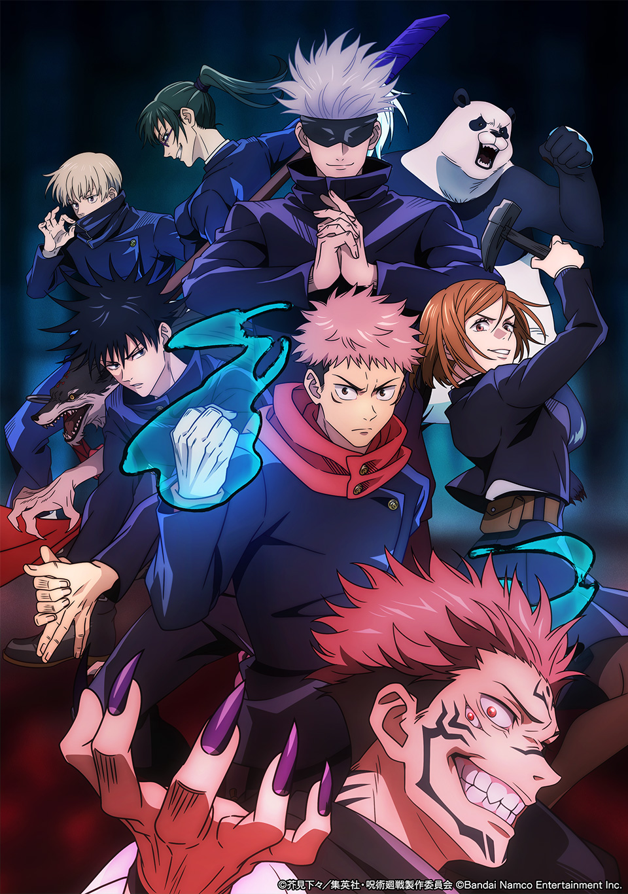

僕のヒーローアカデミア
あらすじ
「個性」と呼ばれる超能力が人々に備わった世界で、無個性の少年・緑谷出久が最強のヒーローを目指して成長する物語。

はたらく細胞
あらすじ
人体の中で働く細胞たちの日常と奮闘を描いた擬人化医療アニメ。

呪術廻戦
あらすじ
呪いが人々に害をなす世界で、特異な力を持つ高校生・虎杖悠仁が、仲間と共に呪術師として戦いながら、自らに宿った最強の呪い“両面宿儺”と向き合っていくダークファンタジーアニメです。